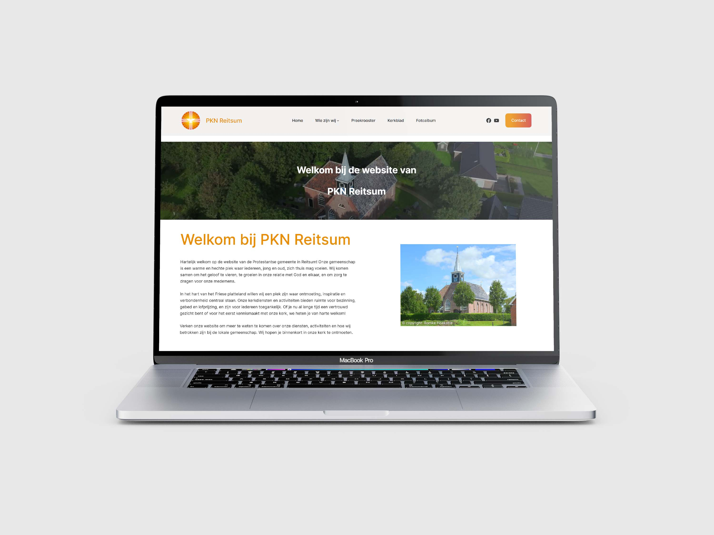

Periode 1, jaar 1
De opdrachtgever zag een gat in de markt, een kans om een succesvolle game te ontwikkelen. In een groepje van 4 moesten wij een idee pitchen en een prototype ontwikkelen.
Mijn rol: Op dit moment in de opleiding werd er nog niet gekeken naar coderen maar naar project management. Binnen dit project heb ik rechtenvrije visuals gebruikt en mijn eigen visuals toegepast. Daarnaast heb ik de leiding genomen en heb ik geprobeerd een mooi concept voor de klant op te zetten.
Periode 2, jaar 1
Voor dit project moest er een IOT oplossing ontwikkeld worden voor een probleem, het product moest worden voorzien van een ardiuno, sensoren, servo’s en MQTT.
Mijn rol: Voor dit project werd er niet gewerkt in groepjes maar alleen.
Het leek mij een leuk idee om voor dit project een automatisch kattenluikje op te zetten die alleen open ging wanneer er een kat voor stond.
Daarnaast heb ik een functie toegevoegd waardoor ik bij kon houden wanneer de kat naar binnen of buiten ging via het luikje, hierdoor kon ik zien of de kat thuis was.
Het kattenluikje werkt met een PIR sensor waarna de servo’s opendraaien zodat het luikje open kan, hierna kan ik de signalen lezen via MQTT op mijn laptop.
Mijn mooie kattenluikje kunstwerk werkt volledig op de sensoren, arduino, breadbord en servo’s.
Periode 4, jaar 1
Voor dit project heeft het CJIB ons gevraagd een stageportaal op te zetten, deze moest gemaakt worden met blazor en verbonden zijn aan een database. Het doel van deze opdracht was om het CJIB op ideeën te brengen voor het implementeren van hun stageportaal.
Mijn rol: Voor dit project werkte ik in een groepje van 4 waarbij er goed werd samengewerkt. Mijn rol binnen het project was vooral het ontwerp van de oplossing, daarnaast heb ik ook veel code geschreven voor het overdragen en ophalen van data.
Periode 1, jaar 2
Voor dit project werd ons gevraagd een supermarktsimulatie op te zetten in java waar vooral de onderhoudbaarheid van de code erg belangrijk was.
Mijn rol: Voor dit project heb ik besloten alleen aan de slag te gaan, dit zorgde ervoor dat ik gemakkelijker mijn eigen visie in het project kon stoppen. Naast dat de supermarktsimulatie goed moest werken vond ik ook dat het er visueel goed uit moest zien. De tiles heb ik zelf ontworpen, de poppetjes komen van itch.io
De supermarkt simulatie werkt als volgt:
- Een klant komt binnen met een random boodschappenlijst
- De klant kijkt op zijn boodschappenlijstje en gaat naar de kast waar het eerste product zich bevindt.
- Hierna kijkt de klant naar het volgende product, totdat alle producten van het lijstje in het mandje zitten.
- Na het verzamelen van de producten gaat de klant in de rij staan en betaald hij voor de producten bij de kassa.
- Hierna verlaat de klant de winkel.
- Als een kast leeg is komt er een vakkenvuller die de kast weer bijvult, hierdoor zijn de kasten maar voor een kleine tijd leeg.
- De simulatie blijft dit doen totdat het programma afgesloten wordt.
Opdracht voor de gemeente Leeuwarden
Voor de gemeente Leeuwarden bouwden we een digital twin van het Spoordok op basis van Cesium, een 3D-kaartplatform waarop je eigen data en functies kunt bouwen.
De code die we als startpunt kregen was onoverzichtelijk en te complex voor de opdracht. Daarom heb ik die vanaf het begin opgesplitst in kleinere onderdelen en overbodige code verwijderd, zodat het team er sneller mee kon werken.
Mijn rol: de LLM-integratie, de database in Docker, een deel van de Spring Boot-backend en de visuals.
Low poly horrorgame met zelfgemaakte 3D-assets
Voor de Minor studio 3D en CGI die ik momenteel volg heb ik een game ontwikkeld, dit is een low poly/low resolution horror game in een duister woud. Door middel van deze opdracht heb ik geleerd godot en blender te gebruiken.
Mijn rol: Ik heb de game in mijn eentje ontwikkeld, daarnaast heb ik al mijn assets zelf gemaakt, geanimeerd en getextured. De code is wel gedeeltelijk gemaakt door middel van AI door de grootte van de game en omdat de focus bij deze minor op de game zelf lag en niet op de code.
Opdracht voor Van der Velde Techniek Ginnum
Van der Velde Techniek Ginnum heeft mij de opdracht gegeven een website te ontwikkelen met front en backend.
Mijn rol: De gehele website heb ik ontwikkeld in blazor/razor met een database connectie via dapper, er wordt nog aan de website gewerkt.
Wordpress website ontworpen voor PKN Reitsum en onderhoud
Een tijd terug toen ik nog geen ICT deed heeft PKN Reitsum mij gevraagd een website te maken, deze heb ik gemaakt en ontworpen in Wordpress. Het doel van de website was voorheen voor het aantrekken van een nieuwe predikant.
Mijn rol: Ik heb deze website eerst ontworpen en daarna opgezet in wordpress, momenteel doe ik nog het onderhoud en houd ik zover ik kan de website up to date.
